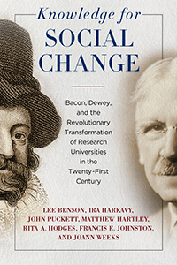

<body bgcolor="#FFFFFF" text="#000000" link="#0000FF" vlink="#CC0000" alink="#CC0000"><center><hr width="350" size="1" align="center" noshade>Argues for and proposes concrete means to radically transform research universities to function as democratic, civic, and community-engaged institutions<hr width="350" size="1" align="center" noshade><p><a href="https://cdcshoppingcart.uchicago.edu/Cart/ChicagoBook.aspx?ISBN=&&PRESS=temple" target="_top">Buy this book!</a> | <a href="https://cdcshoppingcart.uchicago.edu/Cart/Cart.aspx?PRESS=temple" target="_top">View Cart</a> | <a href="https://cdcshoppingcart.uchicago.edu/Cart/Cart.aspx?PRESS=temple" target="_top">Check Out</a></p><p></p></center><!--none//--><h1 class = "booktitle">Knowledge for Social Change</h1> <h1 class = "subtitle">Bacon, Dewey, and the Revolutionary Transformation of Research Universities in the Twenty-First Century</h1>
<h3>Lee Benson, Ira Harkavy, John Puckett, Matthew Hartley, Rita A. Hodges, Francis E. Johnston, and Joann Weeks</h3>
paper: $14.95, Jul 17<BR>EAN:&nbsp;978-1-4399-1519-6<BR><font color=#990033>Not Yet Published Preorder</FONT><font size=-7><br>&nbsp;</font></p><p class="info">cloth: $74.50, <BR>EAN:&nbsp;978-1-4399-1518-9<BR><font color=#990033>Not Yet Published Preorder</FONT><font size=-7><br>&nbsp;</font></p><p class="info">e-book: $14.95, <BR>EAN:&nbsp;978-1-4399-1520-2<BR><font color=#990033>Not Yet Published Preorder</FONT><font size=-7><br>&nbsp;</font></p></p></td></tr></table>
<BR> <p class="info">206 pp<BR> 6 x 9<BR> 1 figs. <p class="info"><font size=-7>&nbsp;</font></p><p class="info">
</P><BLOCKQUOTE></BLOCKQUOTE>
<p>
Employing history, social theory, and a detailed contemporary case study<i>, Knowledge for Social Change </i>argues for fundamentally reshaping research universities to function as democratic, civic, and community-engaged institutions dedicated to advancing learning and knowledge for social change. The authors focus on significant contributions to learning made by Francis Bacon, Benjamin Franklin, Seth Low, Jane Addams, William Rainey Harper, and John Dewey-as well as their own work at Penn's Netter Center for Community Partnerships-to help create and sustain democratically-engaged colleges and universities for the public good. <br>
<p><i>Knowledge for Social Change</i> highlights university-assisted community schools to effect a thoroughgoing change of research universities that will contribute to more democratic schools, communities, and societies. The authors also call on democratic-minded academics to create and sustain a global movement dedicated to advancing learning for the "relief of man's estate"-an iconic phrase by Francis Bacon that emphasized the continued betterment of the human condition-and to realize Dewey's vision of an organic "Great Community" composed of participatory, democratic, collaborative, and interdependent societies.
<br>
<P CLASS="top"><A HREF="#top">BACK TO TOP</A></P>&nbsp;
<BR>&nbsp;
&nbsp;<P>
</P><BR>&nbsp;
<H2 class="inpageheading"><A NAME="author bio"></a>About the Author(s)</H2><p>
<b>Lee Benson</b>&nbsp;(1922-2012) was Professor Emeritus of History at the University of Pennsylvania and co-author of&nbsp;<i>Dewey's Dream: Universities and Democracies in an Age of Education Reform&nbsp;</i>(Temple).
<br>
<p>
<b>Ira Harkavy</b>&nbsp;is Associate Vice President and Founding Director of the Barbara and Edward Netter&nbsp;Center for Community Partnerships at the University of Pennsylvania and co-author of&nbsp;<i>Dewey's Dream: Universities and Democracies in an Age of Education Reform&nbsp;</i>(Temple).
<br>
<p>
<b>John Puckett</b>&nbsp;is Professor of Education at the University of Pennsylvania and co-author of&nbsp;<i>Dewey's Dream: Universities and Democracies in an Age of Education Reform&nbsp;</i>(Temple).
<br>
<p>
<b>Matthew Hartley&nbsp;</b>serves as Associate Dean in the Graduate School of Education and Professor of Education at the University of Pennsylvania. He is also co-editor of&nbsp;<i>"To Serve a Larger Purpose": Engagement for Democracy and the Transformation of Higher Education&nbsp;</i>(Temple).
<br>
<p>
<b>Rita A. Hodges&nbsp;</b>is&nbsp;Assistant Director of the Barbara and Edward Netter Center for Community Partnerships at the University of Pennsylvania.
<br>
<p>
<b>Francis E. Johnston</b>&nbsp;is Professor Emeritus of Anthropology at the University of Pennsylvania.
<br>
<p>
<b>Joann Weeks</b>&nbsp;is&nbsp;Associate Director of the Barbara and Edward Netter Center for Community Partnerships at the&nbsp;University of Pennsylvania.
<br>
<P CLASS="top"><A HREF="#top">BACK TO TOP</A></P>
<p><h2 class="inpageheading"><A NAME="subjects"></a>Subject Categories</h2><P><A HREF="/tempress/social.html" TARGET="_top">Community Organizing and Social Movements</a><BR><P><A HREF="/tempress/education.html" TARGET="_top">Education</a><BR><P><A HREF="/tempress/history.html" TARGET="_top">History</a><BR><P><A HREF="/tempress/philosophy.html" TARGET="_top">Philosophy and Ethics</a></P></P></P>
</p>
<P>
</P>
<p align="center"><a href="https://cdcshoppingcart.uchicago.edu/Cart/ChicagoBook.aspx?ISBN=&&PRESS=temple" target="_top">Buy this book!</a> | <a href="https://cdcshoppingcart.uchicago.edu/Cart/Cart.aspx?PRESS=temple" target="_top">View Cart</a> | <a href="https://cdcshoppingcart.uchicago.edu/Cart/Cart.aspx?PRESS=temple" target="_top">Check Out</a></p><p><font face="Arial" size="1"><a href="copyright.html" onMouseOver="window.status='Web Copyright Policy';return true;" onMouseOut="window.status=''" title="Web Copyright Policy">&copy;</a> 2017 <a href="http://www.temple.edu" target="new" onMouseOver="window.status='Link to Temple University home page';return true;" onMouseOut="window.status=''" title="Link to Temple University home page">Temple University</a>. All Rights Reserved. http://www.temple.edu/tempress/titles/2464_reg.html</font></p>